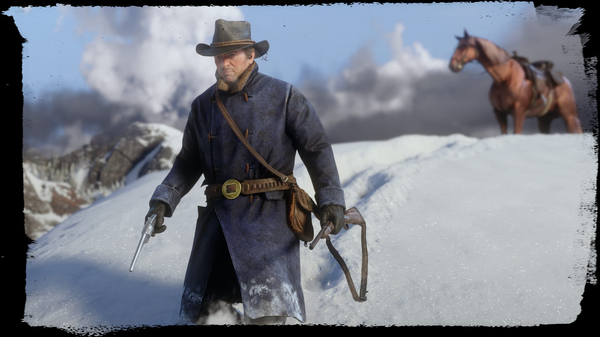

武器与自定义
凭借大量的自定义选项，包括从新的金属、木材、清漆和雕刻等外观升级选项到新的枪管、握柄、瞄具和瞄准镜等性能升级选项，您可以按您所需的外观和
手感设计出一把独一无二的武器。每种武器在伤害、射程、射速、精准度和装填速度方面所展现出来的性能各有所异，因此，根据具体情况明智地挑选武器是十分重要的。
双动式左轮手枪的射速较高，适合用于在马背上进行移动射击。如果您一只手上拿着一盏提灯或提着一只小动物，可以考虑使用削短型霰弹枪；
与其他的单手武器相比，这把枪在近距离的杀伤力更强。捕猎步枪非常适合用于猎杀小型猎物，因为与装有更大规格霰弹的枪械相比，它没有那么容易使猎物的皮毛和肉的品质受损。
当面对只有一两名敌人时，您可以选择使用春田步枪，尽管这把枪的射速较低，但它的伤害更高。若考虑到射程，某些狙击步枪显然是个不错的选择；
不过，也可以将瞄准镜装在其他各种类型的步枪上，使您能够随时在普通视角和瞄准视角之间进行切换。
武器自定义

金属和雕刻可以按部件进行自定义，可以为扳机护环、枪管和枪身等部件选择不同的颜色和雕刻。您也可以为每个部分的雕刻选择不同的镶嵌金属。
若想获得额外的攻击力，请购买和制作分裂子弹、高速子弹或高爆子弹等一系列弹药类型。这可以让你的枪支发挥更大的威力，一击毙命。

您的马鞍将存放您所有的武器。当您要远离您的马匹时，请务必选择并带上所需的武器。
在您的枪套中同时装备单持武器左轮手枪和单持武器削短型霰弹枪。改良和加强型枪套将保护武器免受自然因素的影响来避免磨损，双持枪套使您能够双持武器。


![]()